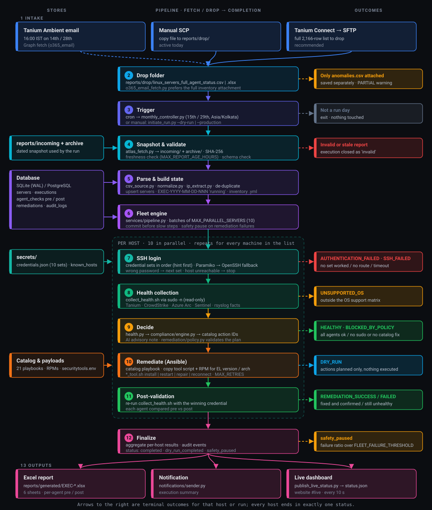

Self_healing
Autonomous Tanium Linux fleet operations — ingest agent status, SSH health-check with up to ten credential profiles, remediate Tanium / Falcon / Arc / rsyslog via Ansible, deliver auditable Excel from the orchestrator.
Download the full guide as PDFLive run loading…
Issues found — fleet table
Same columns as the Excel Fleet Status sheet: every host from the input inventory (processed + queued) with human-readable pre/post per tool (active, connected, not installed, failed, …) and a Comments column. Search matches hostname, IP, display labels, and comments.
| Execution | Hostname | IP | OS | Cred | SSH | Tanium pre | Tanium post | Sentinel pre | Sentinel post | CS pre | CS post | Rsyslog pre | Rsyslog post | Arc pre | Arc post | Overall pre | Overall post | Comments |
|---|
SSH access
Unreachable / auth failed — verified cause
| Host | Tanium IP | Status | Class | Cause (vCenter + SSH) |
|---|
Issues & fixes
An issue is one agent on one host that was not healthy at pre-check (missing, inactive, failed, not reporting, unhealthy). It counts as fixed only when post-validation after remediation shows it healthy.
BLOCKED_BY_POLICY means the platform deliberately did not run (or could not run) Ansible for that host: missing install payloads on the orchestrator (Sentinel AMA, Arc installer), sudo not available for the SSH user, Falcon/Tanium wrong OS build (manual reinstall with maintenance token), or no catalog action for that agent state. REMEDIATION_FAILED means Ansible ran but post-check still shows a problem (playbook error, Arc connect failure, or agent still unhealthy — e.g. CrowdStrike AID not registered yet). Hover the Details column in the fleet table for the exact reason.
| Measure | Count |
|---|
Per-agent health
| Agent | Healthy (pre) | Issues found | Fixed | Pre-check breakdown |
|---|
Remediation actions
| Action | Executed | Failed | Planned (dry-run) | Blocked |
|---|
Recent hosts
| Host | IP | SSH | Pre | Post | Cred | Time (IST) |
|---|
Top failure reasons
| Reason | Hosts |
|---|
Anomaly execution loading…
Movements (pre → post)
| Host | IP | Planned actions | Overall pre | Overall post | Tanium | CrowdStrike | Arc | rsyslog | Summary | Updated (IST) |
|---|
Planned action counts (from CSV hints)
| Catalog action | Hosts |
|---|
Remediation on anomaly hosts (this execution)
| Action | Executed | Failed | Blocked |
|---|
Overview
Runs on blr-kiruthika.strykercorp.com at security-tools-orchestrator/Self_healing/. Monthly loop: inventory on 14/28, execution on 15/29.
pipeline.py
Orchestrates ingest, parallel fleet, compliance, remediation, Excel.
ssh_collector.py
10 creds per host; Paramiko + OpenSSH; collect_health.sh.
compliance/engine.py
Maps facts to catalog actions only.
ansible_exec.py
Playbooks + securitytools.env + RPM payloads.
What it does
| Phase | Action |
|---|---|
| Ingest | Parse linux_servers_full_agent_status.csv/xlsx |
| SSH | Health script on each reachable host |
| Decide | Component pre-status (Tanium, Falcon, Arc, rsyslog) |
| Fix | Ansible when DRY_RUN=false |
| Report | EXEC-*.xlsx + SQLite audit |
Report delivery
| Mode | Status |
|---|---|
drop | Active Manual upload to reports/drop/ |
o365_email | Optional Graph after Ambient 16:00 IST email (scripts/fetch_tanium_from_email.py, needs secrets/o365_graph.json). Prefers linux_servers_full_agent_status.csv; if only linux_servers_anomalies.csv (flagged hosts) is attached it is saved separately and logged as PARTIAL, never overwriting an existing full inventory |
| Tanium Connect → share/SFTP | Recommended Full 2166-row inventory is too large for email; schedule a Tanium Connect export of linux_servers_full_agent_status.csv to reports/drop/ (SMB share or SFTP) |
| Atlas API | Not used No UI scrape in repo |
Tech stack
| Layer | Tech |
|---|---|
| Runtime | Python 3.9+, pydantic-settings |
| DB | SQLAlchemy, SQLite / PostgreSQL |
| SSH | ssh_compat.py, Paramiko <4, sshpass |
| Fix | ansible-runner, 21 playbooks |
| Output | openpyxl Excel |
System architecture
Everything runs on one orchestrator host. Inputs arrive on the left, the eight internal layers run top to bottom, and the only outbound traffic to the fleet is SSH on port 22 (read-only health collection, then Ansible remediation when DRY_RUN=false).
Full pipeline: fetch / drop → completion
One picture of the whole run, colour-coded by phase: intake, trigger, validate, state & fleet engine, SSH, health, decide, remediate, post-validate and finalize & outputs. Stores sit on the left; dashed arrows to the right are where a host or run stops, with the status it ends in. Steps 7–11 repeat for every machine, 10 at a time.

python3 scripts/build_pipeline_diagram.py.Component layers
| # | Layer | Key modules | Responsibility |
|---|---|---|---|
| 1 | Schedule | scripts/monthly_controller.py, scheduler/calendar.py | Decides whether today is a run day (15th / 29th, Feb handled), which report date to expect, and archives on 14 / 28. |
| 2 | Ingest | ingestion/atlas_fetch.py, csv_source.py, normalize.py, ip_extract.py | Snapshots the drop file to incoming/ + archive, maps Tanium columns, normalizes health values, picks the first usable IPv4, de-duplicates rows. |
| 3 | State | models/entities.py, repository.py, inventory/builder.py | Upserts servers, creates the execution row (EXEC-YYYY-MM-DD-NNN), writes the Ansible inventory, records every audit event. |
| 4 | Fleet engine | services/pipeline.py | Runs hosts in batches of MAX_PARALLEL_SERVERS threads, logs progress every 25 hosts, pauses remediation if the failure ratio crosses FLEET_FAILURE_THRESHOLD. |
| 5 | SSH | services/ssh_collector.py, ssh_compat.py, credentials/provider.py | Tries up to 10 credential sets per host, Paramiko first then OpenSSH + sshpass, runs the read-only collect_health.sh. |
| 6 | Decide | services/health.py, compliance/engine.py, ai/analyst.py, remediation/policy.py | Turns facts into per-agent status, maps non-healthy agents to catalog action IDs, adds an advisory AI note, and rejects any plan outside the catalog. |
| 7 | Remediate | remediation/ansible_exec.py, catalog.py, automation/playbooks/ | Runs only catalog playbooks with the host's winning credential, retries per MAX_RETRIES, then re-collects health to validate. |
| 8 | Report | reporting/excel.py, notifications/sender.py | Builds the six-sheet workbook and sends the execution summary. |
Monthly timeline
reports/drop/ (manual SCP today)monthly_controller.py → full fleet executionreports/generated/ + notificationReports older than MAX_REPORT_AGE_HOURS are rejected, so the run never acts on stale data. Manual runs use initiate_run.py, which bypasses the calendar.
End-to-end run flow
- TriggerCron (
monthly_controller.py) or manualinitiate_run.py --dry-run | --production - Locate report
reports/drop/linux_servers_full_agent_status.csv|xlsx, or Graph email fetch wheno365_emailis enabled - Snapshot & validateCopy to
reports/incoming/+ archive, SHA-256, freshness check; invalid → execution closed asinvalid - Parse & upsertColumn mapping, IPv4 extraction, de-dup; servers upserted; execution row created as
running - Inventory
automation/inventories/EXEC-*.ymlwritten for Ansible - Load credentialsRegistry synced from
credentials.json; passwords resolved in memory only - Fleet loopEach host goes through the per-host decision flow below, in parallel batches
- FinalizeCounts aggregated, status
completed/dry_run_completed/safety_paused - Excel + notify
reports/generated/EXEC-*.xlsx; JSON summary printed withreport_path
Per-host decision flow
Every host ends in exactly one final status. The main path runs down the left; each check that fails branches right to its terminal status.
SSH_FAILED host unreachable / timeout
collect_health.sh sudo -n bash -s, falls back to bash -sSSH credential loop
Each credential set is a fixed username + password pair. For one host the collector walks the sets in order and stops at the first success:
| Outcome of an attempt | What happens next |
|---|---|
| Authenticated | Stop; this set becomes the host's credential for collection and Ansible. |
| Password rejected | Wait 0.3 s, try the next set. |
| Banner error / connection reset | Retry the same set once after 2 s (handles sshd MaxStartups throttling). |
| Host key changed | ssh-keygen -R on secrets/known_hosts, retry once. |
| No route / refused / timed out | Host-level failure: skip remaining sets → SSH_FAILED. |
ssh-keyscan under a lock, so parallel workers cannot corrupt known_hosts. Repeated wrong passwords can trigger pam_faillock on targets; adding a credential_hint column to the CSV makes the right set go first.Data & state paths
| Stage | Location | Contents |
|---|---|---|
| Drop | reports/drop/ | Latest Tanium file as delivered |
| Snapshot | reports/incoming/, reports/archive/ | Dated copy used by the run, retained history |
| Database | DATABASE_URL (SQLite / PostgreSQL) | Servers, executions, agent checks (pre / post), remediations, AI notes, audit events, credential registry (no passwords) |
| Inventory | automation/inventories/EXEC-*.yml | Ansible hosts for the execution |
| Secrets | secrets/ | credentials.json, securitytools.env, known_hosts — never written to reports |
| Output | reports/generated/EXEC-*.xlsx | Summary, Agent Compliance, Remediation Details, Failed Servers, Execution Log, AI Analysis |
| Logs | logs/ | Run logs (SSH attempts, fleet progress) |
Status vocabulary
| Status | Meaning |
|---|---|
| HEALTHY | All agents healthy at pre-check |
| REMEDIATION_SUCCESS | Fixed and confirmed by post-validation |
| DRY_RUN | Remediation needed; actions planned only |
| REMEDIATION_FAILED | Ansible ran but post-check not healthy |
| AUTHENTICATION_FAILED | Reachable, but no credential set worked |
| SSH_FAILED | No IPv4, unreachable, refused, or timed out |
| UNSUPPORTED_OS | OS / version outside the support matrix |
| BLOCKED_BY_POLICY | No sudo, or plan rejected by policy |
Per-agent values in the compliance sheet: HEALTHY, MISSING, INACTIVE, FAILED, NOT_REPORTING, UNHEALTHY, UNKNOWN.
Execution model
- All hosts are attempted. The safety pause counts remediation failures only (
FLEET_PAUSE_ON_SSH_FAILURES=false). - Ansible uses only the credential set that authenticated on that host.
DRY_RUN=trueby default;--productionis required for live changes.- No general shell endpoint: remote commands are limited to the collector script and catalog playbooks.
File catalog
| Path | Role |
|---|---|
| backend/services/pipeline.py | Orchestration |
| backend/services/ssh_compat.py | SSH policy |
| secrets/credentials/credentials.json | 10 SSH profiles |
| secrets/securitytools.env | Falcon / Arc / syslog |
| automation/playbooks/*.yml | Remediation catalog |
Scripts
| Script | Use |
|---|---|
| verify_readiness.py | Pre-flight |
| initiate_run.py | Dry-run / production |
| monthly_controller.py | Cron 14–29 |
| publish_docs_to_nginx.sh | Update this website |
Configuration
DRY_RUN, TANIUM_REPORT_MODE=drop, MAX_PARALLEL_SERVERS=15, CREDENTIAL_DIR, SSH_* in .env.
Excel output
Download the workbook and open the Fleet Status tab first — that is the full host table you asked for: IP, hostname, OS, pre/post Tanium · Sentinel · CrowdStrike · rsyslog · Arc, Comments (same as the live fleet table below). The Summary tab is run totals only.
| Execution ID | Status | Mode | Started (IST) | Ended (IST) | Hosts | Workbook | Size | Updated (IST) |
|---|---|---|---|---|---|---|---|---|
| Loading… | ||||||||
Sheets: Summary, Fleet Status, Issues Found, Issue Details, Agent Compliance, Remediation Details, Failed Servers, Execution Log, AI Analysis.
One-time setup
cd Self_healing && python3 scripts/verify_readiness.py
Dry-run
python3 scripts/initiate_run.py --dry-run --force-rerun --parallel 15
Production
nohup python3 -u scripts/initiate_run.py --production --force-rerun --allow-stale-report --parallel 10 > logs/fleet-prod-$(date +%F).log 2>&1 &
--production forces live mode for the run regardless of DRY_RUN in .env; the log prints PRODUCTION: live remediation enabled and the execution row has dry_run=0. Keep --parallel ≤ 10. Re-running the same command while an execution is still running resumes it and skips hosts already recorded. --allow-stale-report bypasses the 36 h report-age guard.Open this site
http://10.90.105.221:8080/self-healing/
Requires VPN/network route to 10.90.105.221
Fixes 2026-10-04
| Area | Problem | Fix |
|---|---|---|
| Credentials | DB credential registry kept stale usernames/secret refs, so valid creds failed fleet-wide | Registry re-synced from credentials.json every run; entries no longer in the bundle are disabled |
| SSH | OpenSSH fallback retried wrong passwords (doubling failed logins / faillock risk) | Fallback only on transport errors, never on auth failure; 0.3 s pause between credentials |
| known_hosts | Parallel writers corrupted secrets/known_hosts | Single locked writer, per-call OpenSSH file merged afterwards, tolerant loader |
| Fleet engine | Worker crashes silently dropped hosts; batch barrier idled behind slow hosts | Per-worker crash guard + thread pool |
| Database | “database is locked”: each worker held the SQLite write lock across SSH/Ansible | Commit before every slow step; WAL + 60 s busy timeout |
| CrowdStrike check | CID regex expected dashes; every Falcon host looked UNHEALTHY | Matches cid="<32 hex>"; sensor running outside systemd (falcond, exit 85) with CID+AID = HEALTHY (running_outside_systemd) |
| Payloads | Installers never copied to targets; find | head -1 could pick the wrong EL build | Playbooks stage the RPM matching EL major + arch, clean up in always |
| Repair safety | rpm -Uvh fallback replaced an installed sensor with a mismatched build | Repair never swaps an installed package; installs only if missing |
| Live mode | --production still ran DRY_RUN from .env (EXEC-2026-10-04-003 aborted) | --production sets live mode before the pipeline is built |
| Report age | Stale-report guard refused the 72 h-old list | --allow-stale-report flag |
automation/payloads/arc/, automation/payloads/sentinel/) are empty, so ARC_INSTALL / SENTINEL_INSTALL fail until installers are added. CrowdStrike CID mismatch against FALCON_CID is not detected yet (only presence). Hosts where sudo validation fails end as BLOCKED_BY_POLICY.Troubleshooting
| Issue | Fix |
|---|---|
| DNS_PROBE_FINISHED_NXDOMAIN | Use IP URL above |
| All SSH failed | Creds, Paramiko 3.x, port 22 |
| InvalidHostKey / Incorrect padding | Corrupt secrets/known_hosts; auto-sanitized on load (fixed 2026-10-01) |
| Unsupported KEX algorithm "+diffie…" | Old OpenSSH options; fixed in ssh_compat.py |
| Banner error / connection reset | Target sshd throttling; lower MAX_PARALLEL_SERVERS (e.g. 10) |
| Correct password still rejected | Possible pam_faillock lockout: faillock --user <name> on target |
| All remediations DRY_RUN in a --production run | Run started before the 2026-10-04 fix; stop it and relaunch |
| “fleet worker failed … database is locked” | Fixed 2026-10-04; relaunch the same command to resume the execution |
| rpmdb DB_RUNRECOVERY on target | Corrupt RPM database on the host: rpm --rebuilddb (manual) |
| BLOCKED_BY_POLICY “sudo validation failed” | Credential lacks passwordless/password sudo on that host |
Security
- Secrets only under secrets/; catalog-bound Ansible; no arbitrary SSH shell API.